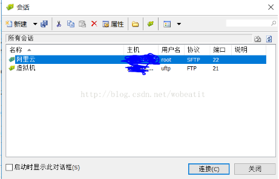

Ubuntu系统下的云服务器网站搭建
Ubuntu系统下的云服务器网站搭建（一）
由于近来一直在学网页开发，所以对于WAMP环境下的网站搭建虽不能说多么精通，但是对于其中流程还是比较熟悉的。并且自己也在本机上写了一些有点规模的网站，通过把自己本地的web服务器IP地址分享给局域网内的其他用户访问检验，小网站的基本功能也都是没有问题的。不过这终归是小打小闹，并不能完全意义上称得上是网站。
于是近来抽了些时间，从网上搜寻一些网站的发布的方法，买域名以及空间这种方法感觉都是出于正式商用等目的的网站发布，并且价位较高，对于我这种学生党，着实承担不起。于是思量一番，决定选择云服务器这种方式发布网站，因为云服务器面对学生的跳楼价着实诱惑人~
针对国内的云服务器进行了一番选择，由于看到网上阿里云服务器的搭建相关的博客较多，于是选择了阿里云玩一玩，毕竟9.9元一个月，还是能承担的起的~关于阿里云服务器的购买，网上的帖子很多，我就不多叙述了，在此需要着重提下我当时学生认证的惊险情况：我填写的学生信息明明毫无错误，但是提交总是失败，眼瞅着总共只有三次认证机会，而我前两次认证均以失败告终。最后一次果断换浏览器尝试，惊险认证成功，所以大家如果认证出现我这种情况时，建议换浏览器！
云服务器简介就到此为止了，下一篇我准备介绍一下LAMP环境的搭建等相关东西。
Ubuntu系统下的云服务器网站搭建（二）
因为之前有接触过一些Linux系统，并且服务器这种我感觉Linux应该要好一些，所以服务器系统我选择了Ubuntu 16.04系统。买好了云服务器之后就是LAMP环境的配置，关于LAMP环境的配置网上有很多，虽然复杂但是远比Windows下的配置简单。同时巧的是我在一位大佬的网上博客中看到，仅仅在远程连接终端输入一句sudo apt-get install lamp-server^，便能完成LAMP环境的配置，抱着试一试的心态，我输入了此语句，谁知语句运行结束后，真的成功装上了，在浏览器输入自己服务器公网IP地址，便顺利显示出了Apache标志性界面：
（当意识到自己LAMP环境一次搭建成功后，回想自己一开始学习web时WAMP环境的搭建，真的是一把辛酸泪。。。）在这里注意的是，在语句运行期间，会涉及到mysql密码的填写，一定要记好自己填写的mysql密码！ 至此，LAMP环境的搭建已经讲述完毕，在下一篇会简要说明XFTP的使用。
Ubuntu系统下的云服务器网站搭建（三）
因为云服务器端操作界面是Linux命令行形式，所以对于在服务器端写网页还真的是挺不舒服的，大多数应该都是写好了网页再上传到云服务器端，于是乎选择一个好的文件传送软件是至关重要的。一开始我试图在服务器搭建ftp系统，然后用ftp传送方式，可是配置不但麻烦，最后还有可能失败。反正，我在漫长繁琐地搭建vsftpd服务器后，仍然无法上传成功，最终选择了放弃。然后机缘巧合用上了XFTP这等文件传送神器软件，可着实让我轻松不少！ 关于XFTP的使用方法，网上有很多，在这里我稍稍提下：
1．打开XFTP软件后，点击左上角文件下拉栏中的新建按钮
2.自己给新建会话拟个名称，这里我拟了个阿里云，主机填自己的云服务器公网IP地址，协议一定要选SFTP协议，端口号默认22，然后下面用户名为root，密码为自己登陆管理终端时root用户的密码。这些都填好后如果没有问题，点击确定。
3.打开xftp软件左上角的下拉栏，选中打开，找到自己想要连接的会话，点击连接
4.至此倘若会话信息填写没有问题，就可以成功地连接到云端服务器，进行欢畅的和Windows下雷同的文件操作了~
Ubuntu系统下的云服务器网站搭建（四）
接下来的文件操作，不得不说XFTP提供了很大的便利，对于不熟悉Linux命令行操作的新手，完全可以按照Windows形式的拖拽实现文件的复制、移动、上传。首先，自己在XFTP软件内找到在自己的主机上存储的网站文件夹，将其移动到云服务器端的/var/www文件夹内，没有意外的话，可以很容易地把文件从本地上传到云服务器端。
下面修改Apache的配置：在服务器端的远程连接终端输入：sudo vim/etc/apache2/sites-available/000-default.conf：
在这里记得修改DocumentRoot 路径为自己网站文件夹路径：/var/www/*** （***处由你自己的文件路径决定编写），之后保存退出。
输入sudo /etc/init.d/apache2 restart 去重启Apache，再次在浏览器端输入云服务器公网ip地址，没有意外的话，可以跳转到你所指定的网站目录下。
（最后提一下我在网站搭建时遇到的问题，所有的相关配置都没检查到问题，却偏偏跳转不到我写的网页去。最终也没耐心解决，果断重新安装LAMP配置，反正就是几行代码的功夫，只是可惜了我有限的流量。。。）
Ubuntu系统下的云服务器网站搭建（五）
至此，网站的搭建已经简单介绍完了，不过由于我在处理文件上传时碰到了一些问题，觉得是比较典型的问题，所以额外写了一篇博客分享一下。
针对文件上传这部分网页代码是我自己写的php脚本，在Windows环境下运行、调试都是没有问题的，但是Linux下文件上传始终不能成功，网上的解决方案，大多是打印出上传的文件信息print_r($_FILES); 检查里面error元素是否为0，如果不为0，就可以根据error的数字号在网上搜索相应的解决方案。针对error不为0的情况的解决方案可以说是非常多，但我碰到的确是error为0偏偏上传失败的问题。
关于error为0但是上传失败，我想这个问题可能熟悉Linux操作的老手应该一眼能看出问题，但是对于我这种刚入门Linux的新手而言，还真的是花了很长时间去处理，最终才发现是文件读写权限的问题。于是在终端输入：
chmod -R 777/var/www/***
chmod a+rwx /var/www/***/up(这里的up文件夹是我文件最终上传后存储在服务器端的文件夹位置)
修改了自己的网站上传文件权限后，便顺利地实现了文件的上传！
最后附上自己上传文件的代码，代码很简单，主要一直卡在读写权限未设置上了。。。